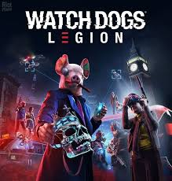
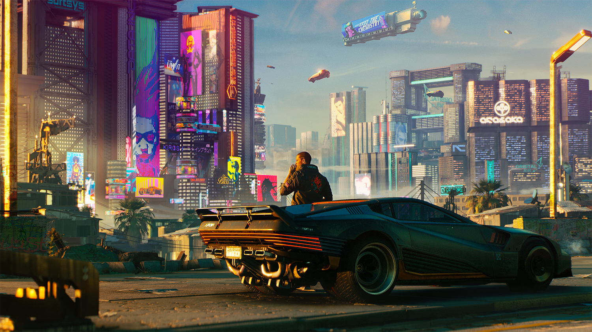

У що грати у 2020 році?
2019 рік був великим роком для відеоігор після доволі середнього 2018 року. Пройшовший рік визначив такі знакові ігри, як The Outer Worlds, Resident Evil 2: Remake, Star Wars Jedi: Fallen Order, Apex Legends, Disco Elysium, Metro Exodus, Sekiro: Shadows Die Twice, Luigi's Mansion 3 та Red Dead Redemption 2 Новий 2020 рік з'явився у нас за воротами цікавих проектів, на який мають великі надії: від супертехнологічного Cyberpunk 2077 до кровавого DOOM та милого Animal Crossing. Більше того, до кінця років існує майже одночасний запуск двох ігрових пристроїв нового покоління - PlayStation 5 та Xbox Series X із своїми ексклюзивними проектами.
Січень і лютий, як правило, бідний на ігрові релізи. Лише з весни починався вихід гучних ігрових проектів, опісля якого приходило відносно спокійне літо, яке змінювалось "спекотною" на релізи осіню.
Цього року мусе бути так,само оскільки деякі новинки вже повиходили,єдине не забувайте що цей рік закріпить це все дуже бурхливий початок зими з виходом нових ігрових приставок та ігор для них в святковий сезон.
P.S: З нетерпінням чекаю на вихід на PlayStation 5
Якщо ви хочете дізнатися про чудові ігрі, на які варто звернути увагу в 2020 році, читайте наш список з ТОП-10 найбільш очікуваних відеоігор.
Сучасні ігри з відкритим світом відчуваються живими. Але це лише на поверхні. Якщо копнути трохи глибше, відразу стане ясно, що все це лише ілюзія з декораціями. Гра Watch Dogs: Legion від Ubisoft вирішила виправити цю ситуацію і надати справжнісінький живий відкритий світ, в якому можна взяти під управління будь-якого персонажа.

Всіх персонажів доведеться вербувати в так званий легіон Опору, який виступає проти диктатури тоталітарного уряду майбутнього. У кожного гравця ближче до кінця гри набереться свій унікальний набір із сміливців, які вирішили піти проти системи. Це можуть бути поліцейські, бандити, офісні клерки, неформали, звичайні пересічні громадяни і навіть літні бабусі - двері відкриті будуть всім.
20 березня 2020 року відбудеться продовження "м'ясного" шутера DOOM 2016 року. Нова частина буде називатися DOOM Eternal без цифрової ітерації. Відеогра запропонує всю ту ж зубодробильну геймплейну механіку. У новій частині будуть додані нові вороги, невеликі поліпшення в геймплеї, покращена графіка, а також новий ігровий режим, в якому онлайн-гравці зможуть приєднатися до вашого одного користувача компанії в якості демонів.

Майбутня мультиплатформенна комп'ютерна гра в жанрі Action / RPG, що розробляється студією Ubisoft Montreal під видавництвом компанії Ubisoft. Є дванадцятої грою в серії ігор Assassin's Creed. Вихід гри на платформах Windows, PlayStation 4, Xbox One, а також на консолях нового покоління PlayStation 5 і Xbox Series X запланований на кінець 2020 року.

Дія гри буде розгортатися в IX столітті на території Англії, в епоху ворогуючих королівств і завоювань вікінгів. Головний героєм стане норвезький вікінг Ейворі, якому належить знайти для свого клану новий будинок на чужорідної землі.
Ігор на виживання в світі зомбі виходять щорічно цілими пачками, але дійсно цікавих серед них вкрай мало. Dying Light 2 вселяє довіру. Попередня частина була тепло прийнята критиками і гравцями за велику свободу відкритого світу і варіативність гейпмлея. Dying Light 2 буде такий же RPG з відкритим світом від першої особи про виживання в світі, де вірус заразив велику частину населення планети і перетворив їх на зомбі. Як і в першій частині, Dying Light 2 запропонує одну з кращих систем паркуру в іграх на сьогоднішній день - ви можете бігати по стінах, відскакувати від стовпів і ворогів, гойдатися на брусах і багато іншого.

У грі також буде продумана система рукопашного бою в поєднанні зі зброєю, яке ви створюєте або знаходите в смітті. Сам світ Dying Light 2 вкрай ворожий і екстремально небезпечний для життя, але при цьому шалено привабливий для дослідження. Крім зомбі небезпеку становлять конфлікти між фракціями. Гра часом буде змушувати робити вкрай важкий моральний вибір - рішення, які ви приймете, матимуть реальні наслідки і вплинуть на ігровий світ. Точна дата виходу не вказана, вказаний лише рік виходу - 2020.
Перша частина The Last Of Us була однією з найкращих відеоігор минулого десятиліття. Тому сиквел зобов'язаний був з'явитися. Це теж гра про виживання в світі зомбі, але з ухилом в дуже глибокий сюжет і взаємини між персонажами. Події в The Last Of Us Part II розгорнуться через п'ять років після подій оригінальної гри. Еллі і Джоел оселилися в Джексоні, штат Вайомінг, і знайшли світ в невеликому співтоваристві. Проте, подія переверне все це з ніг на голову, відправивши Еллі в скрутне і травмує подорож з поліпшеним ігровим процесом, новим зброєю і черговий захоплюючою історією.

Влітку 2020 року вийде ексклюзивна гра для PlayStation 4. Ghost of Tsushima - це Souls-like проект з відкритим ігровим світом, який перенесе гравців y 1200-х роки. Головний герой гри виступає в якості японського самурая, що захищає острів Цусіма від вторгнення Монгольської імперії. Очікуються запеклі сутички в ближньому бою, багато стелса і приголомшливі візуальні ефекти.

Гучний на виставці E3 2018 проект Cyberpunk 2077 в минулому році получив дату виходу - квітень 2020 року, яка була пізніше перенесена на 17 вересня. Відеогра є, напевно, найбільш очікуваним проектом 2020 року від польської студії CD Projekt Red, яка зробила одну з кращих ігор десятиліття - Відьмак 3. Очікування від цієї гри дуже високі, як і вимоги до якості і ігрового процесу в загальному.
Після фентезійного світу Відьмака 3, в Cyberpunk 2077 гравців перенесуть в світ кіберпанкового майбутнього з безпрецедентним рівнем свободи. Гра заохочує будь-який спосіб проходження: напролом з перестрілками і вибухами, потайним проходженням в дусі Соліда Снейк або Сема Фішера або підлим способом шляхом злому андроїдів, підкупу або переконливих розмов з залякуванням опонентів. Будь-який шлях буде вірним для досягнення мети. А ще там буде чудовий Кіану Рівз - ну хіба це не хіт?


Березень принесе ще один реліз - середньовічну рольову гру з ухилом на масові баталії Mount & Blade II: Bannerlord. Ця гра 2020 році нарешті порадує цінителів подібного жанру. Нова частина стане більша та краща у всіх фронтах тут зі збереженням оригінальних ідей і ігрової механіки: вражаюча симуляція битв армій в реальному часі, пророблена до дрібниць бойова ситема, дипломатія та економіка, а до них додасться містобудування, управління фракціями, виготовлення зброї і розширені можливості для нетрадиційних ігрових стилів, таких як бандитизм або торгівля.

Якби ми складали список найдивніших ігор 2020 року, Biomutant, безумовно, був би на вершині ТОПу. За словами розробників, Biomutant - це постапокаліптична рольова RPG-гра з відкритим світом і бойовою системою, в якій рукопашний бій поєднується зі стріляниною і потужними здібностями опроміненого радіацією мутанта.

Замість людини нам доведеться взяти під управління антропоморфного кролика з величезним мечем за спиною. Гравець вільний дослідити відкритий інопланетний світ, наповнений небезпекою і духом пригод. Гру можна досліджувати пішки або за допомогою одного з різних ігрових транспортних засобів, таких як гігантські роботи, водні мотоцикли, повітряні кулі або навіть кількома ручними монстрами. Вихід гри запланований на 2020 рік, але точної дати немає.
19 травня 2020 року вийде Wasteland 3 - істинна та справжня RPG-серія про пост-апокаліпсис. Знаменитий Fallout взяв за основу ідеї саме з першої частини цієї гри. Друга частина була тепло прийнята гравцями, тому розробники з inXile Entertainment вирішили випустити продовження. Wasteland 3 позбудеться від стереотипного пустельного сеттинга. Замість цього гра опустить гравців в холодний Колорадо, країну, зруйновану триваючої ядерною зимою. Wasteland 3 прагне оживити складну і свідомо смертельно небезпечну стратегічну бойову систему в стилі XCom з новою зброєю і можливостями, якими можуть скористатися гравці (і вороги). Вперше в серії буде додано кооператив.

20 березня 2020 року виходить наймиліша гра року. Ті, хто втомився від жорстокості і перестрілок, можуть зануритися в теплий і ламповий світ Animal Crossing.
New Horizons, населений милими антропоморфними звірятами на якомусь далекому острові Nook Inc. Це такий собі аналог The Sims, але з більш продуманою системою взаємовідносин з усіма жителями і безтурботним життям. Можна Крафтити предмети, збирати ресурси, займатися риболовлею і садівництвом, торгувати, облаштовувати будинок, заробляти гроші, ходити в гості, відзначати свята. Можливостей у і тонкощів у гри дуже багато і відкривати їх поступово досить приємне заняття. При цьому все виглядає дуже мило і чарівно. Щоб пограти в це, доведеться придбати Nintendo Switch - гра ексклюзивна для цієї платформи.

Дякуємо що додивились наш ТОП до кінця!
Пака!
Dzon Project